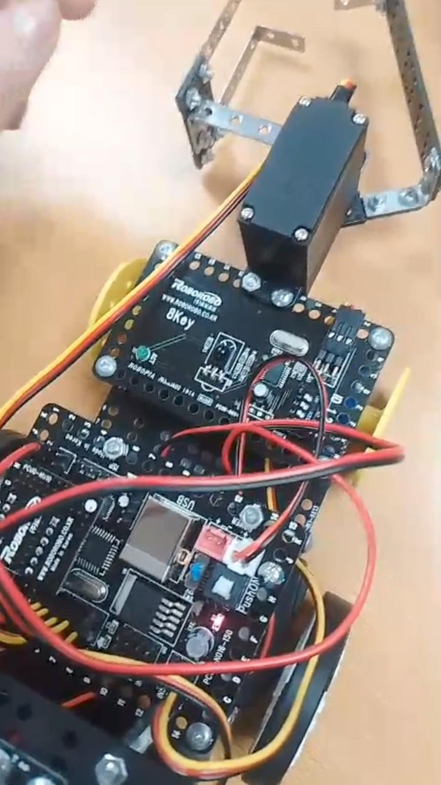
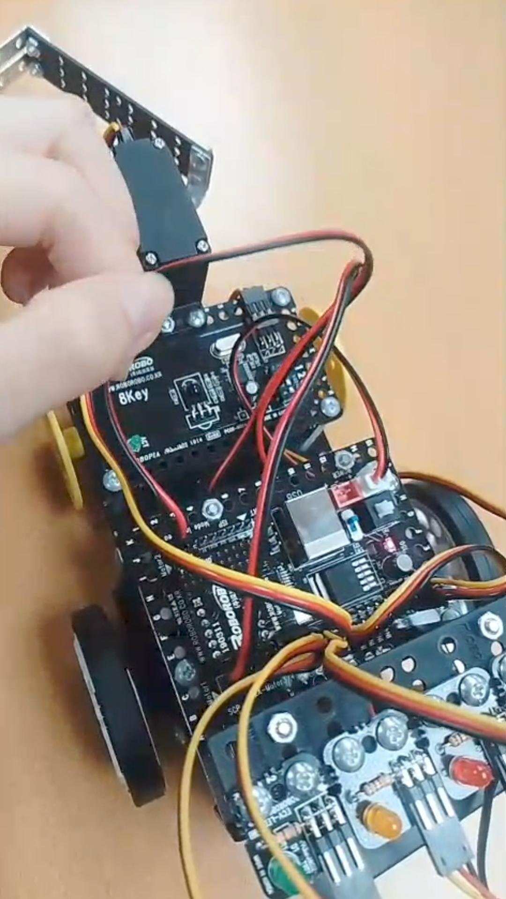

The Muscular System
Muscle problems can affect many people and range from mild issues like cramps to serious chronic disorders. These conditions can interfere with daily movement, physical performance, and overall quality of life. Some muscle problems are temporary and easy to treat, while others are long-term and more complex, such as inflammatory muscle diseases and fibromyalgia. Understanding these problems is important because many symptoms can be similar, and correct identification helps choose the best treatment.
The muscular system is fundamental for movement and the overall functioning of the body, as it allows us to perform everything from basic activities to complex movements. It works together with the skeletal and nervous systems to produce coordinated action throughout the body.

Identify Problems or Illness
| Problem | Description | Treatment |
|---|---|---|
| Muscle Weakness | Loss of strength, difficulty doing activities, pain when using the affected muscle, difficulty with balance, trembling. | Physical therapy, strengthening exercises, treat underlying cause, vitamin supplementation, assistive devices. |
| Muscle Strains | A twist or pull that stretches or tears a muscle or tendon. Symptoms: pain, muscle spasms, swelling, trouble moving. | R.I.C.E. (Rest, Ice, Compression, Elevation), anti-inflammatory medication, gentle stretching, physical therapy. |
| Tendinitis | Severe swelling of a tendon that occurs after repeated injury to an area. | Rest, ice, anti-inflammatory drugs, physical therapy, braces, corticosteroid injections. |
| Muscle Cramps | Sudden, involuntary spasms in one or more muscles. | Stretching, gently massaging, applying heat/ice, fluids if dehydrated. |
| Elevated Muscle Enzymes | Indicate recent muscle damage, inflammation, or stress. | Treat underlying cause, rest, hydration, monitor levels, IV fluids in severe cases. |
| Inflammatory Myopathy | Rare autoimmune diseases causing chronic muscle inflammation and progressive weakness in hips, shoulders and neck. | Corticosteroids, immunosuppressive drugs, physical therapy, IV immunoglobulin. |
| Myositis | Inflammation of muscles used to move the body. Fatigue after walking, tripping, trouble swallowing or breathing. | Anti-inflammatory medication, corticosteroids, immunosuppressants, supervised physical therapy. |
| Fibromyalgia | Chronic pain and stiffness all over the body (aching or burning), muscle and joint stiffness, numbness, sensitivity, fatigue, trouble sleeping. | Pain relievers, antidepressants, anti-seizure medicines, sleep, physical activity, yoga, tai chi, massage, acupuncture. |


Bibliography External References